In this Lab, you will continue to refactor our CoffeeMate Case Study, this version is called CoffeeMate.3.0. We will build on the previous lab and add in more new features and UI Design. In this version we will add in a few more activities and some extra layouts. On completion of this lab you'll be able to
use multiple Fragments in different Activities
use Spinners (dropdown lists)
filter lists based on different criteria
use the Application Object
As with the previous lab, you can download some starter code for this lab here - CoffeeMate.3.0.Starter. It contains all the resources you'll need to complete this lab along with some of the code.
Once you open the CoffeeMate 3.0 Starter Project in Android Studio it should looks as follows:
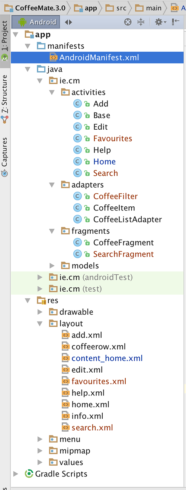
Take a few moments to familiarise yourself with the new classes in your project and explore the resources that you will be referring to throughout the lab, especially the new layouts in both 'Design' view and 'Text' view. It's also probably a good idea to run the App at this stage too, so you can set up your AVD (if you haven't done so already) and confirm that the starter app is configured properly and running (although 'Search' and 'Favourites' don't really do anything).
In this lab, you are required to do the following:
Display a list of the users 'Favourite' Coffees
Allow Coffees in the list to be filtered on their type and name.
The following steps will guide you through these requirements, so we'll start with refactoring the necessary classes.
When we're finsihed this lab, we'll be able to display the users Favourite coffees and apply a filter to the list of coffees so the user can search on a coffee name or type, or both. If you've run the starter code (and it's recommended you do) you'll see that the 'Search' & 'Favourites' buttons are working, but not functioning properly - we're not seeing any refined list of coffees.
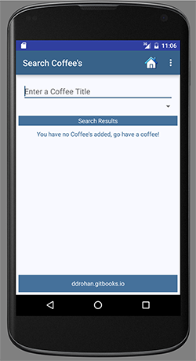 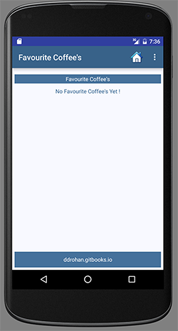
Furthermore, there's nothing to select from the Spinner (second screenshot above) so this lab is all about refactoring existing classes to get these features working.
It's also worth taking a look at our Home.java below just to confirm you understand how we implemented the button functionality (see below).
The following steps will take you through completing CoffeeMate 3.0.
package ie.cm.activities;
import android.os.Bundle;
import android.support.design.widget.FloatingActionButton;
import android.support.design.widget.Snackbar;
import android.support.v7.widget.Toolbar;
import android.view.View;
import android.widget.TextView;
import ie.cm.R;
import ie.cm.fragments.CoffeeFragment;
import ie.cm.models.Coffee;
public class Home extends Base {
@Override
protected void onCreate(Bundle savedInstanceState) {
super.onCreate(savedInstanceState);
setContentView(R.layout.home);
Toolbar toolbar = (Toolbar) findViewById(R.id.toolbar);
setSupportActionBar(toolbar);
toolbar.setLogo(R.drawable.ic_launcher1);
FloatingActionButton fab = (FloatingActionButton) findViewById(R.id.fab);
fab.setOnClickListener(new View.OnClickListener() {
@Override
public void onClick(View view) {
Snackbar.make(view, "Information", Snackbar.LENGTH_LONG)
.setAction("More Info...", new View.OnClickListener() {
@Override
public void onClick(View view) {
openInfoDialog(Home.this);
}
}).show();
}
});
this.setupCoffees();
}
public void add(View v)
{
goToActivity(this,Add.class,null);
}
public void search(View v)
{
goToActivity(this,Search.class,null);
}
public void favourites(View v)
{
goToActivity(this,Favourites.class,null);
}
@Override
protected void onResume() {
super.onResume();
coffeeFragment = CoffeeFragment.newInstance(); //get a new Fragment instance
getFragmentManager()
.beginTransaction()
.replace(R.id.fragment_layout, coffeeFragment)
.commit(); // add/replace in the current activity
}
public void setupCoffees(){
coffeeList.add(new Coffee("Standard Black", "Some Shop",2.5,1.99,false));
coffeeList.add(new Coffee("Regular Joe", "Joe's Place",3.5,2.99,true));
coffeeList.add(new Coffee("Espresso", "Ardkeen Stores",4.5,1.49,true));
}
}If you recall in CoffeeMate 2.0 we used a Fragment to display our list of coffees inside our Home Screen. A Fragments main purpose is to be reused so we can use our existing Fragment in both our Search & Favourites Screens.
The first thing we'll do is add the Fragment to our Search.java and Favourites.java Activity classes. This is pretty staright forward as we have already done this in our Home.java in CoffeeMate 2.0.
coffeeFragment = CoffeeFragment.newInstance(); //get a new Fragment instance
getFragmentManager()
.beginTransaction()
.replace(R.id.fragment_layout, coffeeFragment)
.commit(); // add/replace in the current activityYou can literally cut & paste the above code into both activity classes onResume() method and run the app, so see what you get?
And don't forget to use Android Studio's tools for overriding methods
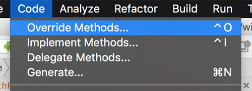
and then
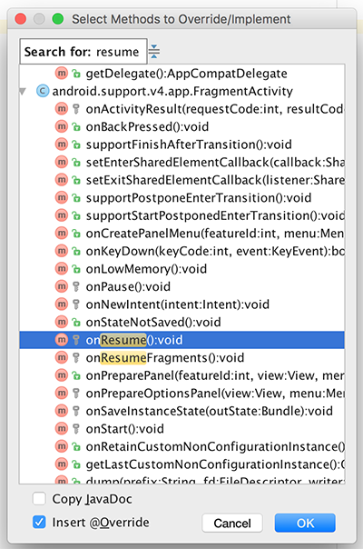
You should be seeing something like the following :
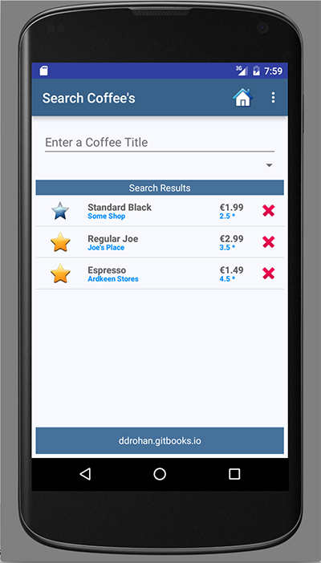 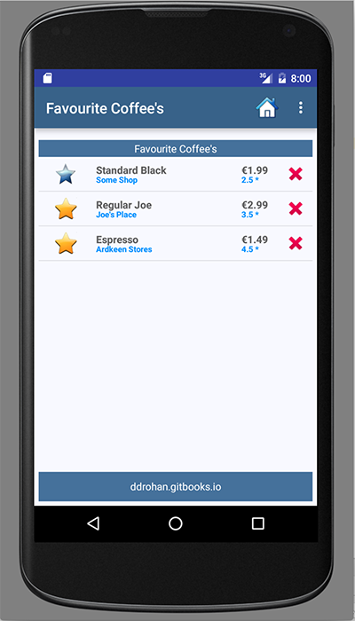
Obviously, our Favourites isn't filtered to show just 'Favourite Coffees' (we'll get to that later), but this does really illustrate the benefits of using Fragments when we can.
The next step is introducing the Filter so the user can view their Favourite Coffees (and eventually search).
As mentioned in the Lectures, a ListView supports filtering of elements via its adapter. In this step we will associate our custom filter (CoffeeFilter.java) with our CoffeeFragment so that we have the ability to filter this list whatever way we want, on any screen we want.
First of all, familiarise yourself with the (already supplied) CoffeeFilter class. Pay particular attention to the two methods that had to be implemented to actually filter the data and then 'publish' the results and make sure you understand what's going on.
Next, have a look at the constructor
public CoffeeFilter(List<Coffee> originalCoffeeList, String filterText,
CoffeeListAdapter adapter) {
super();
this.originalCoffeeList = originalCoffeeList;
this.filterText = filterText;
this.adapter = adapter;
}and see if you can create an instance called coffeeFilter inside our CoffeeFragment without referring to the notes.
Once you have the filter set up, the next step is to call it's filter method correctly to filter out just the 'Favourite' coffees and display them in our list. To achieve this you'll need to call the following code (can you work out where it should go inside our CoffeeFragment?)
if (getActivity() instanceof Favourites) {
coffeeFilter.setFilter("favourites"); // Set the filter text field from 'all' to 'favourites'
coffeeFilter.filter(null); // Filter the data, but don't use any prefix
listAdapter.notifyDataSetChanged(); // Update the adapter
}If you run the app again, and select the Favourites Button, you should now see just the 'Favourite' coffees, like so:
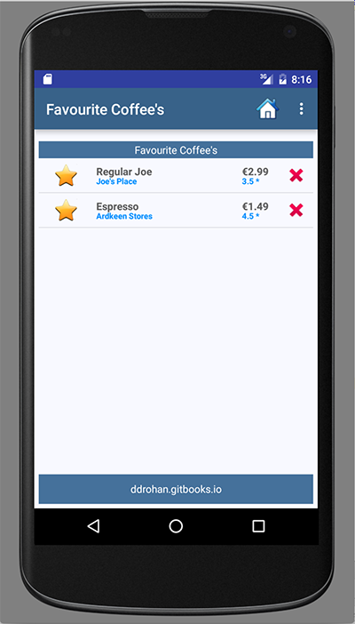
Note that we didn't have to modify a single line of code in our Favourites.java Activity class.
There's still a few issues with our Favourites though, if you've done some proper testing? And tried to delete multiple coffees via the context menu? Can you identify how to fix it?
Hint : You'll be focusing on the 'deleteCoffees() method and having to 'filter' again. (Or you can always check the notes!)
Next we'll look at searching our coffees by name and/or type.
We now have a Fragment that has filtering capabilities so we use these to search our list of coffees and refine the list based on either the coffees name, it's type, or both. To achieve this, we'll subclass our existing CoffeeFragment and create new class called SearchFragment and associate this Fragment with our Search.java Activity class.
Have a quick look at the existing SearchFragment class:
public class SearchFragment extends CoffeeFragment
{
@Override
public void onAttach(Context c) {
super.onAttach(c);
}
@Override
public void onCreate(Bundle savedInstanceState) {
super.onCreate(savedInstanceState);
}
@Override
public void onStart() {
super.onStart();
}
}There's not much in there, so first add the following :
public SearchFragment() {
// Required empty public constructor
}
public static SearchFragment newInstance() {
SearchFragment fragment = new SearchFragment();
return fragment;
}And the next thing we'll do is add some choices to the Spinner so the user can filter on a 'type'.
We'll use an Adapter to populate the Spinner data so have a go at completing the following:
First, create the Adapter
ArrayAdapter<CharSequence> spinnerAdapter = ArrayAdapter
.createFromResource(/*activity reference*/, /*the options to display*/,
android.R.layout.simple_spinner_item);
spinnerAdapter
.setDropDownViewResource(android.R.layout.simple_spinner_dropdown_item);Next, bind to the Spinner widget of the layout
Spinner spinner = /*Bind to the spinner widget R.id.searchCoffeeTypeSpinner*/;and finally, set the Spinners adapter to the adapter you've set up (spinnerAdapter).
If you run your app again, you would expect to see the Spinner showing data - but it does not. Can you work out what the issue is? (HINT: Have a look at the Search.java Activity class and the type of Fragment being loaded)
If you've spotted what needed to be changed, run the app one more time and you should now be seeing something like this when you click on the Spinner.
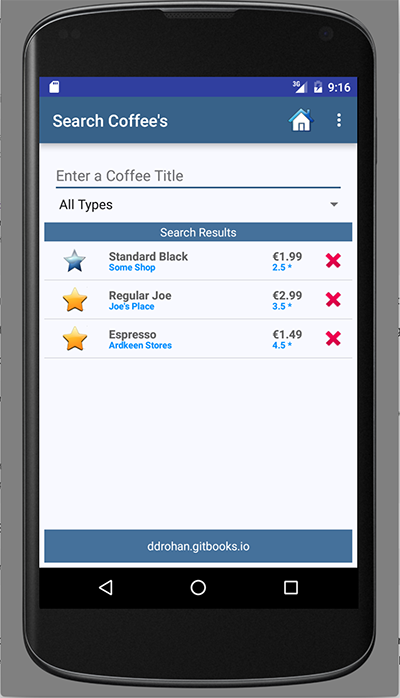
and
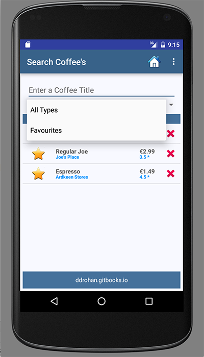
The last step is to add the listeners for the Spinner and EditText widgets to filter the list on the users selections.
At the moment, if the user types in some text or selects an option from the Spinner on the Search screen, nothings happens as there's no code attached to these types of events. This step involves implementing the necessary interfaces to complete the lab.
If you haven't been doing so already, you should definitely make use of the Android Studio features to speed up this process, so all we will be left with is writing the specific code for what we want to happen.
First of all, ensure your SearchFragment implements the correct interface
implements AdapterView.OnItemSelectedListenerand use Android Studio to implement the interface methods like so
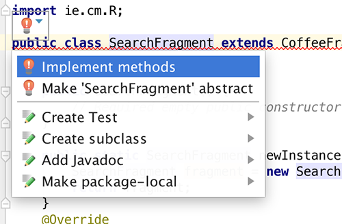
and you get the following:
@Override
public void onItemSelected(AdapterView<?> parent, View view, int position, long id) {
}
@Override
public void onNothingSelected(AdapterView<?> parent) {
}We only need to complete the onItemSelected method to filter our list when the user selects a particular 'type' of coffee, as follows:
Introduce a new global String variable 'selected' then
Introduce this helper method
private void checkSelected(String selected)
{
if (selected != null) {
if (selected.equals("All Types")) {
coffeeFilter.setFilter("all");
} else if (selected.equals("Favourites")) {
coffeeFilter.setFilter("favourites");
}
String filterText = ((EditText)activity
.findViewById(R.id.searchCoffeeNameEditText))
.getText().toString();
if(filterText.length() > 0)
coffeeFilter.filter(filterText);
else
coffeeFilter.filter("");
}
}and finally, inside 'onItemSelected'
String selected = parent.getItemAtPosition(position).toString();
checkSelected(selected);Once again, be clear about what is going here.
We also need to override our 'deleteCoffees()' method in the super class to ensure our context menu continues to function as expected, so revisit 'CoffeeFragment' and change the access modifier of the method to public and then introduce the following method into your 'SearchFragment'
@Override
public void deleteCoffees(ActionMode actionMode) {
super.deleteCoffees(actionMode);
checkSelected(selected);
}The last thing to do is set the spinners listener, so have a go at this method call.
Run your app again to confirm everything is still working as expected.
Similar to handling the Spinner try and use the Android Studio features to implement the TextWatcher interface. If you've done this correctly you'll have the following method stubs:
@Override
public void beforeTextChanged(CharSequence s, int start, int count, int after) {
}
@Override
public void onTextChanged(CharSequence s, int start, int before, int count) {
}
@Override
public void afterTextChanged(Editable s) {
}There's actually very little code necessary to implement this feature, so see if you can complete this final step without referring to the lecture material.
HINT: the filter method of our coffee filter takes a String to filter on and you need to add the relevant listener to the EditText.
Once you have that up and running you should be seeing something like this during filtering:
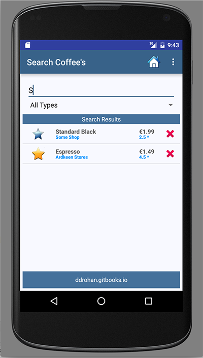
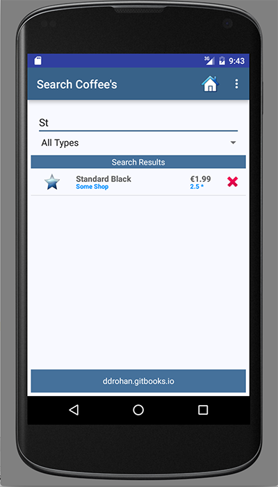
In order to keep our application design coherent, we now bring in an 'Application' object.
Create a new package called 'ie.cm.main' and incorporate this class here:
package ie.cm.main;
import ie.cm.models.Coffee;
import java.util.ArrayList;
import java.util.List;
import android.app.Application;
import android.util.Log;
public class CoffeeMateApp extends Application
{
public List <Coffee> coffeeList = new ArrayList<Coffee>();
@Override
public void onCreate()
{
super.onCreate();
Log.v("coffeemate", "CoffeeMate App Started");
}
}Application objects need to be referenced in the AndroidManifest.xml - at the very top as 'andorid:name'
<application
android:allowBackup="true"
android:icon="@mipmap/ic_launcher"
android:label="@string/app_name"
android:supportsRtl="true"
android:theme="@style/AppTheme"
android:name="ie.cm.main.CoffeeMateApp">Make sure the 'CoffeeMate App Started' appears in the logs to verify that it has actually been engaged correctly, when you launch the app.
As we now want our Application Object to manage or list of coffees, we need to replace all references of the list from Base with a reference to our Application Object list.
The Base class will now look something like this
...
public class Base extends Activity {
public CoffeeMateApp app;
protected Bundle activityInfo;
public Fragment coffeeFragment;
@Override
protected void onCreate(Bundle savedInstanceState) {
super.onCreate(savedInstanceState);
app = (CoffeeMateApp) getApplication();
}
...You can then access the list of coffees via the Base class 'app' reference like so...
Our refactored 'Add'
app.coffeeList.add(c);See if you can refactor the rest of the affected classes.....
This is a solution to the lab:
In this lab you have experimented with Custom Adapters, Fragments and Filters, and the Application Object: